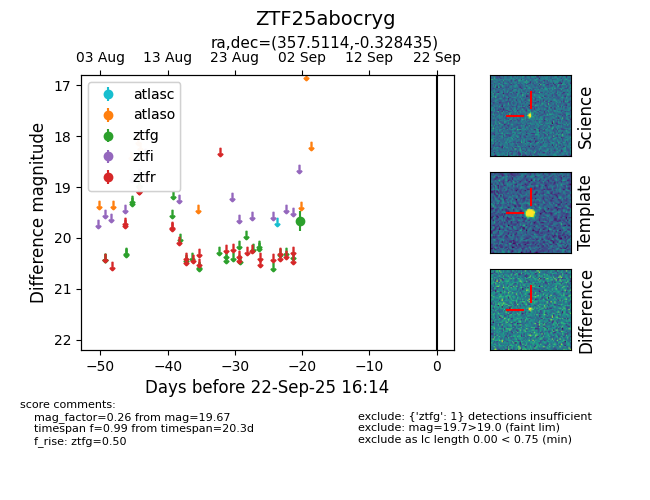

FINK: ZTF25abocryg
Lasair: ZTF25abocryg
ALeRCE: ZTF25abocryg
ZTF25abocryg (ztf,fink)
equatorial (ra, dec) = (357.5114,-0.32844)
galactic (l, b) = (91.5905,-59.41179)

last ztfg=19.67
1 ztfg detections